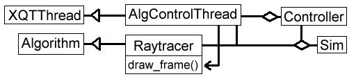

Playing Back A Recording
To control play back of a recording, the user uses the Contoller class.
The middle button stops the animation. Buttons to either side step
forward and backwards. The next set of buttons to each side are for continuous
play, with the farthest buttons having no delay between frames of animation.
Sim has a Raytracer, a Controller,
and an AlgControlThread. The Controller also has a pointer
to the thread.
The AlgControlThread runs in an infinite loop. The Controller signals to
this object, by calling methods that change data values. The code in the
loop checks those values, and decides what to do from them. If the user were
to click on the step forward button, the Controller would call a method of
the AlgControlThread to set a variable to step_forward. When the control thread
next runs, it will get the next frame of the animation, play it, and set the
state back to stop. If the user were to click on one of the forward buttons,
the state would not be changed until the user pressed another button, or
there were no more frames of animation. Also, there would be a delay between
displaying frames.
public void die(){ quit_thread=true; }
public void set_alg_state(int state, int delay){ alg_state= state; code_delay= delay; }
public void run(){
while(true){
while(alg_state!=stop_selected){
if(sim.get_recording()==null){
alg_state=stop_selected;
}
busy=true;
switch(alg_state){
case REVERSE: //play reverse
frame= sim.get_recording().prev();
if(frame==null){
sim.get_controller().set_stop();
alg_state=STOP;
}else{
sim.get_algorithm().draw_frame(frame);
}
break;
case STEP_REV: // step reverse
...
}
if(frame!=null) Utils.pause(code_delay);
if(quit_thread){ alg_state=STOP; return; }
}
busy=false;
} }